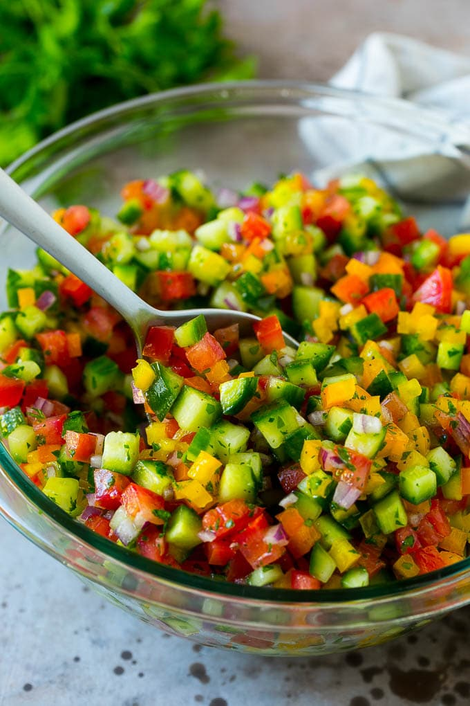

<hr class="hr">
<div class="recipe-grid mt-4">

  <div class="row category mb-4">
    <h2>Dinner</h2>
  </div>
  <div class="row">
    <div class="col-md-4 col-sm-12">
      <a href="./recipes/kahsa_varnishkes.html">
        <figure>
          
        </figure>
        <figcaption>Kasha Varnishkes</figcaption>
      </a>
    </div>
    <div class="col-md-4 col-sm-12">
      <a href="./recipes/spicy_peanut_ginger_noodles.html">
        <figure>
          
        </figure>
        <figcaption>Spicy Peanut Ginger Noodles</figcaption>
      </a>
    </div>
    <div class="col-md-4 col-sm-12">
      <a href="./recipes/israeli-salad.html">
        <figure>
          
        </figure>
        <figcaption>Israeli Salad</figcaption>
      </a>
    </div>
  </div>